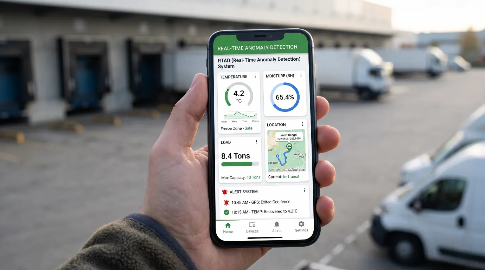
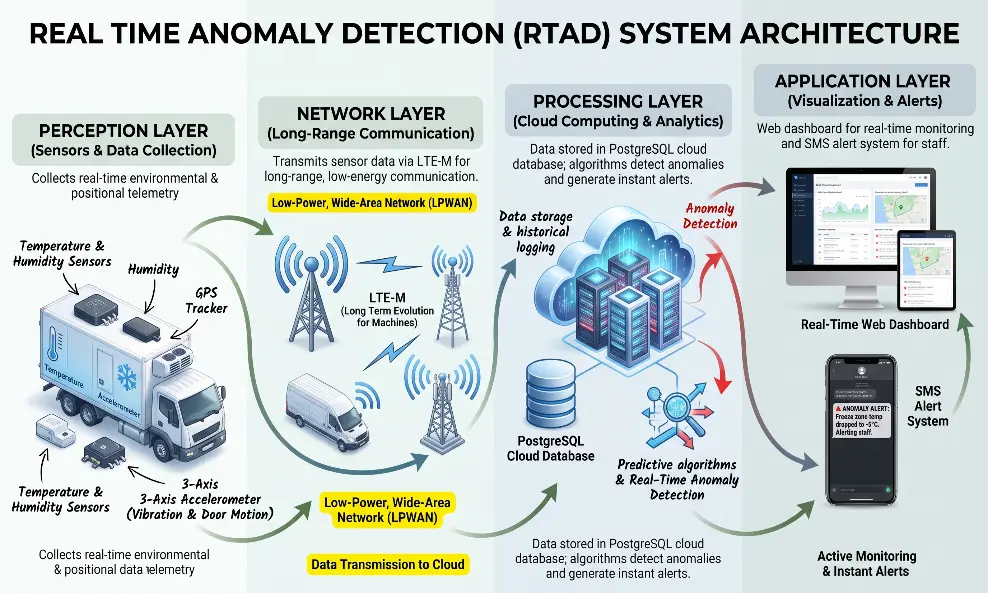
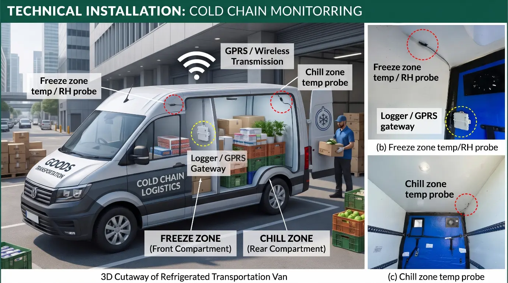

Smart Produce Monitoring & Management
KRISHI PRAKRITI promotes intelligent post-harvest management through IoT-enabled sensing technologies and digital monitoring solutions. We integrate smart sensors, real-time data acquisition, and remote monitoring systems to track critical storage parameters such as temperature, relative humidity, moisture content, and environmental conditions of agricultural produce.
Book ServiceIoT-based sensors for continuous monitoring of temperature, humidity, moisture, and storage conditions.
Automated alerts, remote monitoring, and data-driven control of storage environments.
Early detection of unfavourable storage conditions to minimise spoilage and preserve produce quality.
Sensor-based data acquisition, historical trend analysis, and intelligent decision support.

The Real Time Anomaly Detection (RTAD) system follows a 4-layer IoT architecture designed for robust and scalable monitoring:

